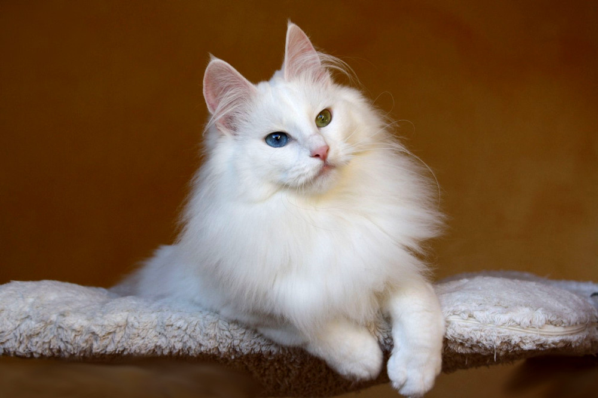
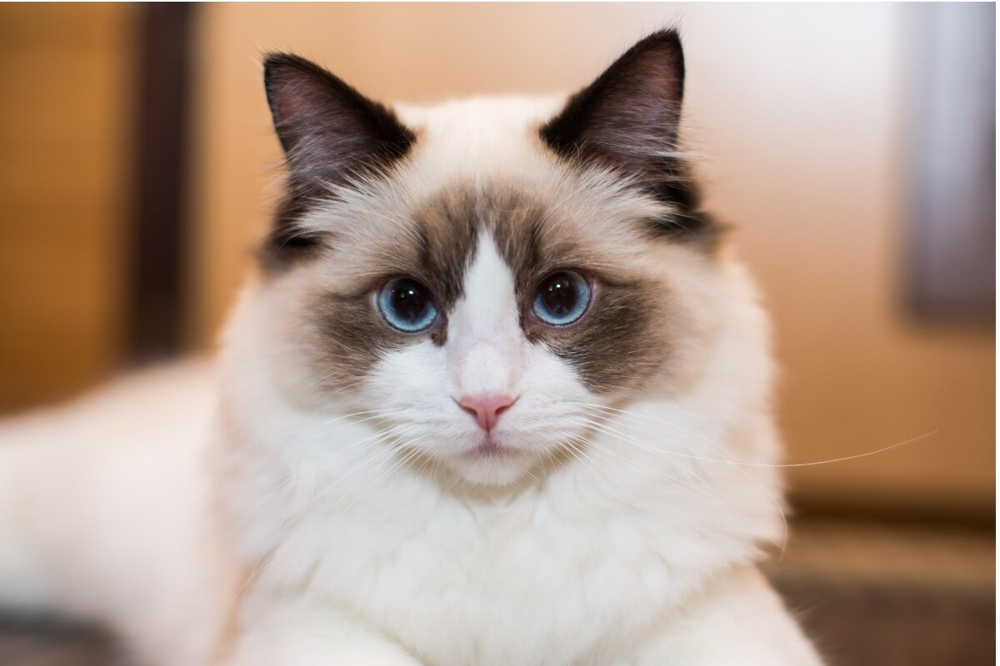

El suave gato persa se encuentra entre las razas favoritas. Sorprende el hecho de que este gato, conocido en persa como Gorbe-ye irāni (gato iraní), pertenezca a las razas de gatos más antiguas, así como el hecho de que el gato persa que conocemos actualmente no proceda de Oriente.
El gato persa destaca por su pelaje largo y suave, con un manto inferior denso. Pero no todos los gatos de pelo largo son persas, de hecho estos gatos han de cumplir numerosos requisitos adicionales para satisfacer los estándares de la raza. El aspecto de los gatos persas está definido por 3 asociaciones de criadores diferentes, que priorizan características distintas. Por regla general, un gato persa ha de tener un tamaño mediano a grande.
Tamaño:
Rango de peso:
Machos: (grandes) > 5 kg Hembras: (medianas) 3 - 5 kg
Expectativas:
Esperanza de vida: 8 - 11 años Tendencia a perder pelo: alta
Pelo:
Longitud: Largo Características: Sedoso Colores: blanco, rojo, crema, negro, azul, chocolate, lila, plateado, dorado, cameo (chinchilla rojo), concha de tortuga, crema azul, marrón, calicó, seal (foca) Volver al Inicio
Angora Turco

Las investigaciones genéticas confirman que el angora turco es, efectivamente, una de las razas de gatos más antiguas del mundo. Su pelaje largo fue fruto de una mutación natural y no de la selección llevada a cabo por el hombre, un rasgo que diferencia la historia de su cría de la de otras muchas razas felinas.
El angora turco, denominado en Turquía Ankara kedisi, llegó incluso a considerarse gato nacional, y no es de extrañar, pues este felino elegante, fuerte, de hasta 5 kg de peso cautiva a muchos con un pelaje largo que se caracteriza por su tacto sedoso. Al no tener manto inferior, queda pegado al cuerpo y no supone un gran esfuerzo a la hora de cuidarlo. El clima de su lugar de origen es la razón por la cual, en invierno, desarrolla un pelo denso y tupido con un collar marcado, pero que en verano se vuelve corto, ligero y sedoso. Esta raza se adaptó perfectamente a los calurosos veranos y a los fríos inviernos de las zonas montañosas de Anatolia y el Cáucaso.
Tamaño:
Rango de peso:
Machos: (grandes) > 5 kg Hembras: 3 - 5 kg
Expectativas:
Esperanza de vida: 9 - 14 años Tendencia a perder pelo: alta
Pelo:
Longitud: Medio, largo Características: Sedoso Colores: blanco, rojo, crema, negro, azul, plateado, concha de tortuga, calicó, calicó diluido, azul crema Volver al Inicio
Ragdoll

El ragdoll es un gato grande, con pecho ancho y cuerpo musculoso, que destaca por su pelaje suave. Este es de longitud media, sedoso y con poco subpelo, por lo que queda pegado al cuerpo. Esto le proporciona un aspecto de peluche que se ve reforzado por la gorguera, que presentan la mayoría de ejemplares.
El ragdoll es posiblemente el gato más tranquilo de todas las razas de gatos domésticos. Son gatos que se conforman bastante, no son exigentes y toleran la mayoría de las situaciones. Tienen un carácter muy tranquilo y relajado, lo que les convierte en mascotas fieles y entregadas. Hay quien cree que estos gatos son inmunes al dolor, pero esto es rotundamente falso. Su comportamiento relajado deriva de un carácter muy confiado y no de una ausencia de sensibilidad.
Tamaño:
Rango de peso:
Machos: (grandes) > 5 kg Hembras: (grandes) > 5 kg
Expectativas:
Esperanza de vida: 7 -12 años Tendencia a perder pelo: alta
Pelo:
Longitud: Largo Características: Sedoso Colores: frost (gris claro), azul, chocolate, seal (foca), rojo, lila, azul crema, crema Volver al Inicio